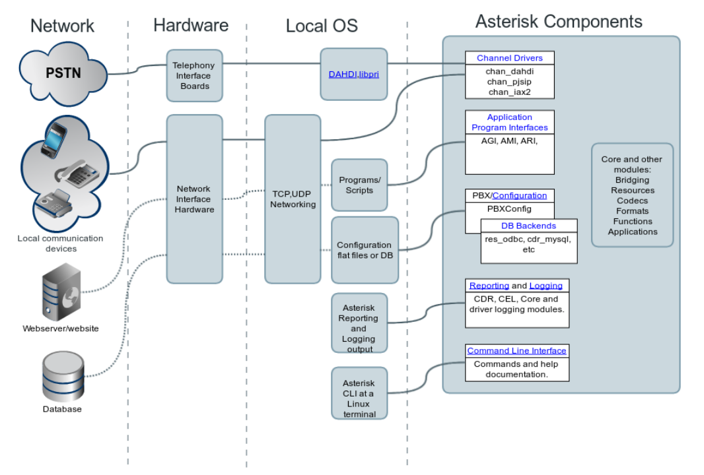

第三章 基础知识¶
1. 目录和文件结构¶
Asterisk 使用一组标准化的目录路径结构来组织其配置文件、模块、运行时数据、日志与脚本。这些目录位置的定义集中在主配置文件 asterisk.conf 中。
以下讲解每个路径的用途、典型内容及其配置项名称（关键字）。
1. Asterisk 配置文件目录¶
- 功能：存放所有 Asterisk 的主要配置文件。
- 内容：.conf、.ael、.lua 等文件。如：sip.conf、pjsip.conf、extensions.conf、logger.conf。
- 解析顺序与模块加载顺序直接相关。
- 此目录应纳入版本控制系统（如 Git）以便配置回溯与审计。
2. 模块目录（Loadable Modules）¶
- 功能：存放以 .so 为后缀的共享对象（Shared Objects），即 Asterisk 可加载模块。
- 来源：编译安装时自动生成或手动部署的模块文件。
- 如：chan_pjsip.so, app_dial.so, res_rtp_asterisk.so
- 此目录与 modules.conf 配合，控制模块加载/禁用。
3. 运行时库目录（Various Libraries）¶
- 功能：存储运行过程中使用的数据与可变内容。
- 子目录包含多个运行时子系统数据，例如：
- sounds/：系统提示音
- images/：图像数据
- firmware/：设备固件
- moh/：保持音乐
- keys/：加密密钥
4. 内部数据库目录（Asterisk DB）¶
- 功能：存放 Asterisk 内置数据库（In Asterisk versions using the SQLite3 database） 文件 astdb.sqlite3。
- 特性：
- 用于存储持久化状态信息，例如 database put 命令设置的键值对。
- 管理动态配置状态（如订阅状态、通话转接设置等）。
- 管理建议：定期备份此文件，尤其在生产环境中。
This location is used to store the data file for Asterisk's internal database. In Asterisk versions using the SQLite3 database, the file will be named astdb.sqlite3.
5. 加密密钥目录¶
- 功能：密钥管理目录（位于 astvarlibdir/keys）。
- 适用场景：TLS、SRTP、身份验证、JWT 等加密方案。
- 建议：
- 权限应为 700，防止非特权用户访问。
- 配置 pjsip.conf 时可引用此路径。
6. 数据资源目录（System Data）¶
- 功能：读取提示音（prompts）、保持音乐（moh）、图像等资源。
- 默认子目录：
- sounds/：语音提示（WAV、GSM、SLN 格式）
- moh/：保持音乐（可自定义添加音乐资源）
7. AGI(Asterisk Gateway Interface) 脚本目录¶
- 功能：Asterisk Gateway Interface（AGI）脚本默认存放位置。
- 适用语言：Perl、PHP、Python、Shell 等。
- 示例脚本：example.agi 可通过 dialplan 中的 AGI(example.agi) 调用。
- 脚本需具备可执行权限，且 Asterisk 用户需有读取权限。
8. Spool 目录（异步文件处理）¶
- 功能：处理异步/中间态文件的工作目录。
- 子目录示例：
- monitor/：录音文件（由 MixMonitor() 生成）
- voicemail/：语音留言
- outgoing/：外呼任务（.call 文件）
- tmp/：临时缓存
- system/、dictate/、meetme/：对应功能模块的数据缓冲
9. 运行进程目录Running Process¶
- 功能：存储进程运行时生成的控制文件：
- asterisk.pid：主进程 ID
- asterisk.ctl：Asterisk 控制 socket，用于 CLI 管理
- 用于命令行工具 asterisk -r 和 asterisk -x 的通信
- 若该路径不可写，Asterisk CLI 无法连接到后台进程。
10. 日志目录Logging Output¶
- 功能：集中记录系统运行日志与调试信息。
- 常见日志文件：
- full：详细运行日志（由 logger.conf 控制）
- messages：普通消息日志
- queue_log：呼叫队列统计日志
- 支持日志级别控制、模块级输出过滤
11. 系统可执行文件目录 System Binary¶
- 功能：主程序 asterisk 二进制文件所在位置
- 其他可能程序：safe_asterisk、辅助管理工具等
- 若自定义部署路径，需同步修改此值，或更新系统 PATH 变量。
12. 统一路径配置的工程价值¶
| 维度 | 作用 |
|---|---|
| 安全隔离 | 可将运行数据与配置分离，实施只读保护、防篡改控制 |
| 自动化部署 | Ansible、Dockerfile 可基于路径结构进行精确管理 |
| 系统兼容性 | 便于迁移与升级，不依赖编译时硬编码路径 |
| 调试效率提升 | 明确日志、PID、模块位置，提高故障排查精度 |
13. 路径配置最佳实践¶
| 路径变量 | 推荐策略 |
|---|---|
| astetcdir | 加入 Git 控制，并启用自动备份机制 |
| astlogdir | 配合 logrotate 自动分割 |
| astspooldir | 监控磁盘使用率，防止录音/voicemail 导致空间溢出 |
| astdbdir | 周期性快照并同步到远程备份系统 |
| 所有目录 | 权限控制：Asterisk 用户具备最小必要访问权限 |
2. Asterisk框架¶
1. 概述¶
从架构角度看，Asterisk 是一个高度模块化的通信引擎，其核心由一个基础平台加上可扩展的模块组成。模块化带来的关键优势包括：
| 特性 | 说明 |
|---|---|
| 灵活性 | 用户可自由选择所需模块，避免臃肿配置 |
| 可插拔性 | 新增或删除功能无需改动主程序，只需加载/卸载模块 |
| 可维护性 | 模块职责清晰，便于调试与升级 |
2. 整体架构图解析（The Big Picture）¶
1. 核心组件关系¶

| 组件 | 作用 | 示例 |
|---|---|---|
| Core（核心） | 启动、加载配置与模块，解释拨号计划 | pbx.c、config.c 等 |
| Modules（模块） | 功能扩展插件，覆盖信令、语音、会议、接口等 | chan_pjsip.so, app_voicemail.so |
| Channels（通道） | 承载媒体与控制流的逻辑抽象 | SIP、PSTN、WebRTC |
| Dialplan（拨号计划） | 控制系统行为的“脚本语言” | extensions.conf |
| Bridging（桥接） | 通道对通道连接的基础机制 | bridge_simple.so, bridge_softmix.so |
| Applications/Functions | 拨号计划中可调用的操作单元 | Dial(), Voicemail(), Set() |
2. Asterisk 核心（Core）¶
- 核心职责
- 解析配置文件；
- 加载模块并初始化资源；
- 构建拨号计划与执行引擎；
- 管理通道生命周期；
- 路由媒体与事件流。
- 核心文件命名规则
- 核心模块通常以 pbx_ 为前缀命名，例如：
- pbx_config.so：传统拨号计划
- pbx_lua.so：Lua 拨号计划支持
3. 模块系统（Modules）¶
Asterisk 的模块本质上是以 .so 为后缀的动态链接库，位于/usr/lib/asterisk/modules。模块特性：
| 特性 | 说明 |
|---|---|
| 可选构建 | 可通过 menuselect 工具选择构建哪些模块 |
| 可配置 | 多数模块支持独立配置文件或数据库实时配置 |
| 运行时控制 | 支持 module load / module unload 命令动态控制加载状态 |
常见模块示例：
| 模块名 | 功能说明 |
|---|---|
| chan_pjsip.so | 支持 SIP 通道（基于 PJSIP 协议栈） |
| app_voicemail.so | 提供语音信箱功能 |
| app_confbridge.so | 提供会议桥功能 |
| res_agi.so | 提供 AGI 接口支持 |
4. 通话与通道（Calls and Channels）¶
Asterisk 中的“通话（primarily use phones as an example, however you could refer to any channel or group of channels as a call. It doesn't matter if the devices are phones or something else, like an alarm system sensor or garage door opener.）”本质上是通道（Channel）的连接。
通话的多样性示例：
| 类型 | 示例 |
|---|---|
| 点对点通话 | Phone A → Asterisk → Phone B |
| 广播/分页 | Phone → 多个终端 |
| 应用调用 | Phone → Voicemail(), Queue() |
| 内部逻辑 | Local 通道与应用交互 |
通道的本质：
通道是 Asterisk 中对通信媒体承载的抽象，包含媒体流、控制信令和状态数据。通道由**通道驱动模块（Channel Drivers）**创建，例如：
- chan_pjsip：处理 SIP 协议的通道
- chan_dahdi：处理 TDM 硬件通道
- Channels can be bridged to other channels and be affected by applications and functions. Channels can make use of many other resources provided by other modules or external libraries. For example SIP channels when passing audio will make use of the codec and format modules. Channels may interact with many different modules at once.
5. 拨号计划（Dialplan）¶
拨号计划是 Asterisk 的行为控制语言，其结构为一系列语句规则。语法形式：
- 应用（Applications）：执行操作的指令（如 Dial, Playback）
- 函数（Functions）：动态读取或写入值（如 SET, CALLERID(num)）
- When writing dialplan, you will make heavy use of applications and **functions**to affect channels, configuration and features.
- 外部控制：Dialplan can also call out through other interfaces such as AGI to receive call control instruction from external scripts and programs.
6. 深度理解：Asterisk 架构模型的工程意义¶
| 构件 | 工程意义 |
|---|---|
| 模块化设计 | 降低耦合、增强可扩展性，适配多种协议与需求场景 |
| 通道抽象 | 屏蔽协议差异，使拨号计划与实际信令解耦 |
| 拨号计划 | 面向“脚本化控制”的行为编程模型，适合自动化通信 |
| 桥接机制 | 支持多通道、多方通信结构（如会议、转接） |
| 应用/函数模型 | 模块化组合，快速构建通话业务流程 |
3. 模块类型（Types of Asterisk Modules）¶
There are many different types of modules, each providing their own functionality and capabilities to Asterisk.
Tip
Use the CLI command module show to see all the loaded modules in your Asterisk system. See the command usage for details on how to filter the results shown with a pattern. 例如: module show like chan_.
Example:
mypbx*CLI> module show
Module Description Use Count Status Support Level
app_adsiprog.so Asterisk ADSI Programming Application 0 Running extended
app_agent_pool.so Call center agent pool applications 0 Running core
app_alarmreceiver.so Alarm Receiver for Asterisk 0 Running extended
app_amd.so Answering Machine Detection Application 0 Running extended
app_authenticate.so Authentication Application 0 Running core
| 模块名 | 描述 | 状态 | 支持级别 |
|---|---|---|---|
| app_adsiprog.so | ADSI 编程模块 | Running | extended |
| app_agent_pool.so | 呼叫中心坐席池管理 | Running | core |
| app_amd.so | 自动语音应答识别（Answering Machine Detection） | Running | extended |
| app_authenticate.so | 呼叫身份认证 | Running | core |
Asterisk 模块可根据其功能划分为以下几类
1. Channel Drivers（通道驱动）
Channel drivers communicate with devices outside of Asterisk, and translate that particular signaling or protocol to the core. 即实现 Asterisk 与外部通信设备（电话、网关、软电话等）之间的协议翻译。通道驱动是通信起点，负责将媒体/信令引入系统。如：
| 示例模块 | 协议类型 |
|---|---|
| chan_pjsip.so | SIP（基于 PJSIP 协议栈） |
| chan_dahdi.so | TDM（数字中继/模拟电话） |
| chan_iax2.so | Asterisk 自有协议（IAX2） |
| chan_console.so | 控制台音频输入输出 |
2. Dialplan Applications（拨号计划应用）
Applications provide call functionality to the system. An application might answer a call, play a sound prompt, hang up a call or provide more complex behavior such as queuing, voicemail or conferencing feature sets. 即提供具体通话控制动作，如应答、播放、转接、挂断等。可通过拨号计划 extensions.conf 中的 same => n,ApplicationName() 调用。
| 示例模块 | 功能说明 |
|---|---|
| app_dial.so | 呼叫目标通道 |
| app_voicemail.so | 留言信箱 |
| app_queue.so | 呼叫队列 |
| app_confbridge.so | 会议桥接功能 |
3. Dialplan Functions（拨号计划函数）
Functions are used to retrieve, set or manipulate various settings on a call. A function might be used to set the Caller ID on an outbound call, for example. 即读取、修改、评估变量或通话状态信息。在拨号计划中通过 ${FUNCTION(args)} 语法使用。
| 示例函数 | 用途 |
|---|---|
| SET() | 设置变量 |
| CALLERID() | 设置/获取主叫号码信息 |
| CHANNEL() | 通道属性访问 |
| SHELL() | 调用外部 Shell 命令 |
4. Resources（资源模块）
As the name suggests, resources provide resources to Asterisk and its modules. Common examples of resources include music on hold and call parking. 即为系统提供额外资源支持（非直接参与媒体处理），如保持音乐、呼叫驻留等。通常为“服务型”模块，被其他模块调用使用。
| 示例模块 | 功能说明 |
|---|---|
| res_musiconhold.so | 保持音乐 |
| res_parking.so | 呼叫驻留/停靠 |
| res_realtime.so | 数据库动态配置支持 |
5. CODECs（编解码模块）
A CODEC (which is an acronym for COder/DECoder) is a module for encoding or decoding audio or video. Typically codecs are used to encode media so that it takes less bandwidth. These are essential to translating audio between the audio codecs and payload types used by different devices. 即频或视频数据压缩与解压，决定通信音质与带宽效率。不同设备支持的 codec 不一致，Asterisk 负责协商并中转。
| 示例模块 | 格式 |
|---|---|
| codec_ulaw.so | G.711 μ-law |
| codec_opus.so | Opus 音频编解码 |
| codec_g729.so | G.729（商用） |
6. File Format Drivers（文件格式驱动）
File format drivers are used to save media to disk in a particular file format, and to convert those files back to media streams on the network.
即将音频文件写入磁盘/读取磁盘并转为媒体流。与 MixMonitor()、录音、提示播放等功能强相关。
| 示例模块 | 文件格式 |
|---|---|
| format_wav.so | WAV |
| format_gsm.so | GSM |
| format_sln.so | RAW PCM |
7. Call Detail Record (CDR) Drivers（通话详单记录模块）
CDR drivers write call logs to a disk or to a database. 即记录呼叫日志，常用于计费、审计。可配置字段、精度、记录策略。
| 示例模块 | 存储方式 |
|---|---|
| cdr_csv.so | 写入 CSV 文件 |
| cdr_odbc.so | 写入数据库 |
8. Call Event Log (CEL) Drivers（通话事件日志模块）
Call event logs are similar to call detail records, but record more detail about what happened inside of Asterisk during a particular call. 即记录更详细的通话事件过程（包括中间状态、函数调用等）。在高精度话务监控、通话链条分析中更有价值。
| 示例模块 | 特点 |
|---|---|
| cel_csv.so | CSV 格式，事件级记录 |
| cel_odbc.so | 与数据库集成，分析友好 |
9. Bridge Drivers（桥接驱动）
Bridge drivers are used by the bridging architecture in Asterisk, and provide various methods of bridging call media between participants in a call. 即决定多个通道之间如何进行语音桥接（1:1、1:N、全双工、转码等）。与会议系统、通话转接密切关联。
| 示例模块 | 场景 |
|---|---|
| bridge_simple.so | 基础 1:1 桥接 |
| bridge_softmix.so | 混音型多方通话 |
| bridge_multiplexed.so | 高密度桥接（旧） |
1. 通道驱动模块（Channel Driver Modules）¶
All calls from the outside of Asterisk go through a channel driver before reaching the core, and all outbound calls go through a channel driver on their way to the external device. 即通道驱动模块（Channel Drivers） 是 Asterisk 中用于处理与外部设备或通信协议交互的插件模块。它们是所有入站和出站通信的“入口”和“出口”。所有 外部呼叫 → Asterisk 和 Asterisk → 外部设备 都必须经过通道驱动。
The PJSIP channel driver (chan_pjsip), for example, communicates with external devices using the SIP protocol. It translates the SIP signaling into the core. This means that the core of Asterisk is signaling agnostic. Therefore, Asterisk isn't just a SIP or VOIP communications engine, it's a multi-protocol engine.
All channel drivers have a file name that look like chan_xxxxx.so, such as chan_pjsip.so or chan_dahdi.so. 即模块命名规范：chan_<协议名>.so
| 模块文件名 | 描述 |
|---|---|
| chan_pjsip.so | SIP 协议（基于 PJSIP） |
| chan_sip.so | 旧 SIP 协议栈（已弃用） |
| chan_dahdi.so | TDM 硬件支持（模拟/数字电话） |
| chan_iax2.so | IAX2 协议（Asterisk 专有） |
| chan_console.so | 控制台音频接口（本地测试） |
Asterisk 核心为何“信令无关”？
Asterisk 核心（Core）不处理任何特定信令协议，它只理解抽象的**通道（Channel）模型**。这种设计的优势在于：
| 优势 | 解释 |
|---|---|
| 协议解耦 | 核心逻辑无需关心 SIP、DAHDI 或 IAX 的细节 |
| 多协议支持 | Asterisk 可并行支持 SIP + TDM + WebRTC + IAX 等多种通信方式 |
| 可扩展性强 | 可通过新增 chan_XXXX.so 模块支持新协议，如 WebRTC、MQTT |
| 统一通道抽象 | 所有媒体流都被转换为通道对象，便于拨号计划与应用统一控制 |
chan_pjsip 示例详解
chan_pjsip.so 是当前 Asterisk 推荐的 SIP 协议栈驱动：
- 基于 PJSIP 开源协议库
- 支持 TCP / TLS / WebSocket（WebRTC）
- 分层架构（PJSIP 配置 → Transport → AOR → Auth → Endpoint）
- 可配合
res_pjsip_*.so模块提供完整 SIP 能力 - 支持多注册、动态终端配置、NAT 遍历控制等
工程实践建议
| 场景 | 通道驱动选择 |
|---|---|
| 构建 VoIP PBX | chan_pjsip（推荐） |
| 对接传统电话系统 | chan_dahdi |
| 跨防火墙环境的 Asterisk 互联 | chan_iax2 |
| 本地测试音频流程 | chan_console |
| 与浏览器集成 WebRTC | chan_pjsip + WebSocket 支持 |
2. 拨号计划应用模块（Dialplan Application Modules）¶
The application modules provide call functionality to the system. These applications are then scripted sequentially in the dialplan. For example, a call might come into Asterisk dialplan, which might use one application to answer the call, another to play back a sound prompt from disk, and a third application to allow the caller to leave voice mail in a particular mailbox. 即在 Asterisk 中，应用（Applications） 是可通过拨号计划（Dialplan）调用的行为操作单元。它们提供一系列标准的或扩展的通话控制逻辑，用于编排电话处理流程。拨号计划应用 ≠ 软件“应用程序”，而是类似于 DSL（Domain Specific Language）中的“指令”，被 Asterisk 核心解释执行。
All application modules have file names that looks like app_xxxxx.so, such as app_voicemail.so. 即拨号计划应用模块的文件名格式为：app_<名称>.so。
| 示例模块 | 提供的应用函数 |
|---|---|
| app_voicemail.so | Voicemail() 留言信箱 |
| app_dial.so | Dial() 发起呼叫 |
| app_playback.so | Playback() 播放音频文件 |
| app_queue.so | Queue() 呼叫排队 |
exten => 1001,1,Answer() ; 接听电话
exten => 1001,n,Playback(hello-world) ; 播放提示
exten => 1001,n,Voicemail(1001@default,u) ; 用户留言
exten => 1001,n,Hangup() ; 挂断
上例中，每个指令（Answer()、Playback()、Voicemail()）都是对应的 拨号计划应用。
除了 app_.so，其他模块（如 res_.so）也可注册拨号计划应用。例如：
- res_musiconhold.so 提供 MusicOnHold() 应用；
- res_xmpp.so 提供 XMPP() 相关应用。
Applications and functions can also be provided by the core and other modules. Modules like res_musiconhold and res_xmpp provide applications related to their own functionality.
应用的生命周期与执行机制
- 每个拨号计划中的应用在一个特定通道（Channel）上被依序执行；
- 每条执行路径由 priority（优先级）控制；
- 某些应用可能会挂起流程（如 Dial()，等待接通或超时）；
- 某些应用会改变通道状态（如 Hangup()）或引发跳转（如 Goto()）。
常用拨号计划应用示例
| 应用 | 功能说明 |
|---|---|
| Answer() | 接听来电 |
| Hangup() | 挂断电话 |
| Dial() | 呼叫另一个终端或设备 |
| Playback() | 播放语音文件（只读） |
| Background() | 播放语音文件（可中断等待输入） |
| Voicemail() | 将语音留言保存在信箱中 |
| Queue() | 将呼叫放入一个队列，等待坐席接听 |
| AGI() | 通过 AGI 调用外部脚本执行动态控制逻辑 |
| Read() | 播放提示后读取 DTMF 输入 |
| Set() / SetVar() | 设置拨号计划变量 |
| Goto() | 跳转至其他扩展、上下文或优先级 |
模块与拨号计划的协同关系简图
推荐实践
| 场景 | 建议应用 |
|---|---|
| 构建语音菜单 | Background() + Goto() |
| 留言信箱 | Voicemail() |
| 呼叫转移 | Dial() + Transfer() |
| 自动应答 | Answer() + Playback() + Hangup() |
| 集成 CRM | AGI() / ARI() 调用外部服务 |
3. Dialplan Function Modules（拨号计划函数模块）¶
Dialplan functions are somewhat similar to dialplan applications, but instead of doing work on a particular channel or call, they simply retrieve or set a particular setting on a channel, or perform text manipulation. For example, a dialplan function might retrieve the Caller ID information from an incoming call, filter some text, or set a timeout for caller input.即在 Asterisk 拨号计划中，函数（Functions） 是一种用于**读写变量、查询状态、文本处理**等操作的工具，类似于编程语言中的函数调用。与拨号计划“应用（Applications）”不同，函数**不会主动触发操作**（如接听、播放），而是用于**获取或设定**信息。
| 示例模块 | 提供的函数 |
|---|---|
| func_callerid.so | CALLERID() |
| func_odbc.so | ODBC_XXXX() |
| func_timeout.so | TIMEOUT() |
| func_rand.so | RAND()（生成随机数） |
| func_channel.so | CHANNEL()（通道属性访问） |
All dialplan function modules have file names that looks like func_xxxxx.so, such as func_callerid.so, 即func_<名称>.so。 However applications and functions can also be provided by the core and other modules. Modules like res_musiconhold and res_xmpp provide applications related to their own functionality（如 res_agi.so 提供 AGI 变量访问函数）。
函数的使用语法
拨号计划中通过 ${...} 或 Set() 来使用函数。
exten => 1001,1,Set(CALLERID(num)=123456789)
exten => 1001,n,NoOp(Caller ID is ${CALLERID(num)})
常见拨号计划函数举例
| 函数名 | 用途说明 |
|---|---|
| CALLERID() | 获取或设置主叫号码信息（name / num） |
| CHANNEL() | 访问当前通道属性（如通道名、状态） |
| TIMEOUT() | 获取/设置通话各类超时时间（如应答、挂断） |
| RAND() | 生成一个随机数（用于语音验证码、IVR分支等） |
| ENV() | 读取系统环境变量 |
| LEN() | 获取字符串长度 |
| SHELL() | 执行 Shell 命令并返回其输出 |
| ODBC_XXX() | 通过 ODBC 查询数据库 |
模块动态加载与函数注册机制
- 每个函数在模块加载时向 Asterisk 注册；
- 可通过 core show functions 查看所有已注册的函数；
- 函数通常由 func_.so 提供，但 res_.so、核心模块亦可实现注册逻辑；
- 函数调用无顺序依赖，可在任意拨号计划中直接嵌套使用。
4. 资源模块（Resource Modules）¶
Resources provide functionality to Asterisk that may be called upon at any time during a call, even while another application is running on the channel. Resources are typically used as asynchronous events such as playing hold music when a call gets placed on hold, or performing call parking. 资源模块（Resource Modules） 是在 Asterisk 系统运行期间，按需提供附加功能或服务的支持模块。这些功能通常不是主通话流程中的“显式步骤”，但对通话状态、体验和扩展能力具有重要支撑作用。即系统中“实时可调用的工具类服务”。
典型使用场景举例
| 场景 | 所用资源模块 |
|---|---|
| 保持音乐（Music on Hold） | res_musiconhold.so |
| 呼叫驻留 / 停靠（Call Parking） | res_parking.so |
| 呼叫录音监听（Call Spying） | res_monitor.so、res_mixmonitor.so |
| Web 服务集成（REST / XMPP） | res_http_websocket.so、res_xmpp.so |
| 时区解析、语言支持、DNS 服务 | res_timing_.so, res_format_attr_.so 等 |
Resource modules have file names that looks like res_xxxxx.so, such as res_musiconhold.so. 即res_<服务名>.so
Resource modules can provide Dialplan Applications and Dialplan Functions even if those apps or functions don't have separate modules.
资源模块 vs 应用/函数模块对比
| 模块类型 | 执行时机 | 功能聚焦 | 示例 |
|---|---|---|---|
| 应用模块 | 按照拨号计划顺序 | 主动执行步骤 | Playback(), Dial() |
| 函数模块 | 被引用或嵌套 | 数据读取/设定 | ${CALLERID(num)} |
| 资源模块 | 可随时激活 | 提供服务资源 | res_musiconhold, res_parking |
推荐实践建议
| 任务场景 | 使用资源模块 |
|---|---|
| IVR 中使用动态数据库 | res_odbc.so + func_odbc.so |
| 保持期间播放自定义音乐 | res_musiconhold.so 配合 class => 配置 |
| 呼叫中心转接控制 | res_parking.so + Park() |
| 实时集成消息服务 | res_xmpp.so, res_stasis.so |
5. 编解码模块（Codec Modules）¶
CODECs represent mathematical algorithms for encoding (compressing) and decoding (decompression) media streams. Asterisk uses CODEC modules to both send and recieve media (audio and video). Asterisk also uses CODEC modules to convert (or transcode) media streams between different formats. CODEC（COder / DECoder） 是一种数学算法，用于将原始媒体（如音频或视频）压缩成传输格式（编码），或将收到的数据恢复为原始格式（解码）。CODEC 模块完成以下三类任务：
| 功能 | 说明 |
|---|---|
| 编码 | 将 PCM 音频压缩为网络传输格式（如 GSM, G.711） |
| 解码 | 接收远端音频并还原为原始格式供播放 |
| 转码 | 在两个不同编码格式之间转换（如 GSM → G.711） |
CODEC modules have file names that look like codec_xxxxx.so, such as codec_alaw.so and codec_ulaw.so. 即codec_<名称>.so
| 示例模块 | 描述 |
|---|---|
| codec_alaw.so | G.711 A-law 编码器 |
| codec_ulaw.so | G.711 μ-law 编码器 |
| codec_g722.so | G.722 宽带语音 |
| codec_resample.so | 采样率重采样 |
Asterisk 默认内置的 CODEC 模块
Asterisk 默认编译支持下列开源/免专利音频格式：
| 格式 | 比特率 | 说明 |
|---|---|---|
| ADPCM | 32 kbps | 声音清晰，适中压缩 |
| G.711 A-law / μ-law | 64 kbps | TDM 网络常用（无压缩） |
| G.722 | 64 kbps | 宽带高清语音 |
| G.726 | 32 kbps | 电话语音标准 |
| GSM | 13 kbps | 高压缩比语音 |
| LPC-10 | 2.4 kbps | 低速率语音编码 |
The Asterisk core provides capability for 16 bit Signed Linear PCM, which is what all of the CODECs are encoding from or decoding to.所有 CODEC 模块最终都与 Asterisk 核心的 16-bit Signed Linear PCM 接口协作。即：
There is another CODEC module, codec_resample which allows re-sampling of Signed Linear into different sampling rates 12,16,24,32,44,48,96 or 192 kHz to aid translation. codec_resample.so 模块提供采样率重采样功能，将不同采样率的 16-bit PCM 数据相互转换,支持12, 16, 24, 32, 44.1, 48, 96, 192 kHz的采样率。适用于：
- Asterisk 与不同音频采样率设备通信；
- 避免音质下降或通话失真；
- 实现高保真音频桥接（如会议系统）。
Tip
On the Asterisk Command Line Interface, use the command "core show translation" to show the translation times between all registered audio formats.
输出示例（以毫秒为单位）：
- 行/列表示源/目标格式；
- 值越小表示转码延迟越低（性能更佳）；
- slin 表示 Signed Linear PCM，是内部标准格式。
编解码模块的系统角色
| 工程维度 | 体现形式 |
|---|---|
| 带宽优化 | GSM/iLBC/Opus 减少网络占用 |
| 音质控制 | G.722 提供高清语音体验 |
| 跨设备兼容性 | 转码能力使不同终端能互通 |
| 协议解耦 | 通道驱动不需要自己实现编码逻辑 |
| 资源控制 | 可禁用不支持或不需的 CODEC，避免资源浪费 |
推荐实践
| 场景 | 建议 CODEC |
|---|---|
| SIP 电话高音质 | G.722（推荐） |
| PSTN 对接 | G.711 alaw/ulaw |
| 移动设备或弱网 | GSM、iLBC、Speex |
| 跨国部署 | Opus（现代多终端兼容性强） |
| 有版权要求 | 选用合法授权 G.729A 模块 |
6. 文件格式驱动模块（File Format Drivers）¶
Asterisk uses file format modules to take media (such as audio and video) from the network and save them on disk, or retrieve said files from disk and convert them back to a media stream. While often related to CODECs, there may be more than one available on-disk format for a particular CODEC. 文件格式驱动（File Format Modules） 是 Asterisk 中负责将媒体数据（音频/视频）保存为磁盘文件或从磁盘文件读取并还原为媒体流的模块。它们是 “磁盘 ↔ 媒体流” 的桥梁，核心作用包括：
| 方向 | 描述 |
|---|---|
| 写入磁盘 | 通话录音、留言、提示音预生成 |
| 读取播放 | 播放语音文件、图像展示（如 T.140、JPEG） |
| 转码辅助 | 配合 CODEC 模块，实现语音格式转换 |
File format modules have file names that look like format_xxxxx.so, such as format_wav.so and format_jpeg.so. 即format_<格式名>.so
| 模块文件名 | 描述 |
|---|---|
| format_wav.so | 支持标准 .wav 文件格式 |
| format_gsm.so | GSM 编码格式 |
| format_sln.so | Raw PCM 数据 |
| format_jpeg.so | JPEG 图像 |
文件格式驱动与 CODEC 的关系
| 模块类型 | 主要职责 |
|---|---|
| CODEC 模块 | 压缩/解压媒体流（网络传输格式） |
| FORMAT 模块 | 文件读取/写入操作（磁盘格式） |
常见支持的文件格式模块（Asterisk 近期版本内置）
| 模块名 | 支持格式 | 类型 |
|---|---|---|
| format_wav.so | WAV（带头信息 PCM） | 音频 |
| format_wav_gsm.so | WAV 封装的 GSM | 音频 |
| format_sln.so | Raw signed linear | 音频 |
| format_gsm.so | GSM | 音频 |
| format_ilbc.so | iLBC | 音频 |
| format_g723.so | G.723 | 音频 |
| format_g729.so | G.729 | 音频 |
| format_ogg_vorbis.so | OGG + Vorbis | 音频 |
| format_siren7.so | G.722.1 / Siren7 | 音频 |
| format_siren14.so | G.722.1C / Siren14 | 音频 |
| format_pcm.so | Raw PCM | 音频 |
| format_vox.so | VOX ADPCM | 音频 |
| format_g719.so | G.719（宽频） | 音频 |
| format_h263.so | H.263 视频帧序列 | 视频 |
| format_h264.so | H.264 视频帧序列 | 视频 |
| format_jpeg.so | 静态图像 JPEG | 图像 |
工程建议：格式选择策略
| 应用场景 | 推荐格式 | 理由 |
|---|---|---|
| 通用语音提示播放 | .gsm / .wav | 广泛兼容，易于录制 |
| 高保真语音分析 | .sln16 | 无压缩，高质量，适合后处理分析 |
| 磁盘空间有限 | .gsm | 高压缩比，节省存储 |
| 留言语音存储 | .wav49（wav_gsm） | 高兼容 + 高压缩 |
| 视频电话记录 | .h264 | 支持现代视频通话终端 |
format_sln.so 通常作为系统默认格式，支持中转转码。
7. 通话详单记录模块（Call Detail Record, CDR Drivers）¶
CDR modules are used to store Call Detail Records (CDR) in a variety of formats. Popular storage mechanisms include comma-separated value (CSV) files, as well as relational databases such as MySQL or PostgreSQL. Call detail records typically contain one record per call, and give details such as who made the call, who answered the call, the amount of time spent on the call, and so forth.CDR（Call Detail Record） 是 Asterisk 在每次呼叫完成后生成的一条结构化日志记录，用于描述该通话的基本信息。常见字段包括：
| 字段名称 | 含义 |
|---|---|
| src | 主叫号码（source） |
| dst | 被叫号码（destination） |
| start | 呼叫开始时间 |
| answer | 被接听时间（若未接听则为空） |
| end | 通话结束时间 |
| duration | 总通话时长（秒） |
| billsec | 可计费时长（自应答开始计起） |
| disposition | 呼叫结果（ANSWERED / BUSY / NO ANSWER 等） |
| channel, dstchannel | 通话通道标识 |
每一次通话仅产生一条 CDR 记录，适合用于汇总性报表与计费处理。
Call detail record modules have file names that look like cdr_xxxxx.so, such as cdr_csv.so. 即cdr_<存储后端>.so
| 示例模块名 | 存储目标 |
|---|---|
| cdr_csv.so | CSV 文件 |
| cdr_mysql.so | MySQL 数据库 |
| cdr_pgsql.so | PostgreSQL 数据库 |
| cdr_odbc.so | 任意 ODBC 后端 |
| cdr_adaptive_odbc.so | 自动适配 ODBC（推荐） |
The recommended module to use for connecting to CDR Storage Backends is cdr_adaptive_odbc.so. 该CDR 模块具备以下优势：
| 特性 | 说明 |
|---|---|
| 适配能力强 | 支持任意 ODBC 后端数据库 |
| 无需代码层映射 | 通过配置定义字段与 SQL 映射 |
| 可扩展字段记录 | 可将自定义变量写入记录 |
| 高性能/线程安全 | 适合大并发部署 |
| 与 CEL 协同支持 | 可同时记录事件流与通话详单 |
要使用此模块，需先配置 ODBC 驱动 (res_odbc.conf) 并在 cdr_adaptive_odbc.conf 中定义字段映射规则。
CDR 存储后端选型建议
| 使用场景 | 推荐模块 | 理由 |
|---|---|---|
| 快速本地记录 | cdr_csv.so | 配置简单，易读 |
| 集成 BI / 报表系统 | cdr_adaptive_odbc.so | 支持 SQL 查询、JOIN、数据分析 |
| 高可靠分布式部署 | cdr_pgsql.so / ODBC | 支持事务、远程连接 |
| 异构环境 | ODBC 适配 | 跨平台、跨数据库通用接口 |
工程建议：CDR 与通话流程的集成
- 可在拨号计划中使用 Set(CDR(userfield)=...) 写入自定义字段；
- 可通过 h（挂断）扩展中记录额外信息，如通话标签、状态码等；
- 若需更细粒度事件追踪，应配合使用 CEL（Call Event Logging）。
与 CEL 的区别对比
| 特性 | CDR | CEL |
|---|---|---|
| 粒度 | 每通话 1 记录 | 每事件 1 记录 |
| 常用用途 | 计费、汇总报表 | 调试、流程分析、质量监控 |
| 配置复杂度 | 简单 | 稍复杂 |
| 推荐搭配 | 商业系统集成、运营计费 | 呼叫流程追踪、精准审计 |
CDR 模块的系统意义
| 系统作用 | 描述 |
|---|---|
| 业务数据生成源 | 为计费、统计、用户行为分析提供基础数据 |
| 系统集成接口 | 实现与 CRM、计费系统、数据仓库对接 |
| 行为可追溯性 | 精确记录呼叫发起、接通、结束时间与状态 |
| 性能优化参考 | 通过记录 billsec、duration 可分析服务响应性 |
; res_odbc.conf
[asterisk]
enabled => yes
dsn => asterisk-connector
username => asterisk
password => secret
; cdr_adaptive_odbc.conf
[asterisk]
connection => asterisk
table => cdr_log
alias start => call_start
alias billsec => billing_seconds
8. 通道事件日志模块（Channel Event Log, CEL Drivers）¶
Channel Event Logs record the various actions that happen on a call. As such, they are typically **more detailed**that call detail records. For example, a call event log might show that Alice called Bob, that Bob's phone rang for twenty seconds, then Bob's mobile phone rang for fifteen seconds, the call then went to Bob's voice mail, where Alice left a twenty-five second voicemail and hung up the call. The system also allows for custom events to be logged as well. 即CEL（Channel Event Logging） 是 Asterisk 用于详细记录通话生命周期中各类事件的日志系统。它比传统的 CDR（Call Detail Record）更精细化和多维度。
| 时间戳 | 事件类型 | 描述 |
|---|---|---|
| 2025-05-17 10:01:12 | CHAN_START | 通道建立（Alice 发起呼叫） |
| 2025-05-17 10:01:15 | APP_START | 播放语音提示 |
| 2025-05-17 10:01:35 | BRIDGE_START | 与 Bob 通道桥接 |
| 2025-05-17 10:02:00 | HANGUP | 呼叫被挂断 |
每个事件包含：唯一通道标识、时间戳、应用名称、APP 数据、上下文、扩展、桥接 ID、用户字段、通话变量等。
Channel event logging modules have file names that look like cel_xxxxx.so, such as cel_custom.so and cel_adaptive_odbc.so. 即 cel_<类型>.so
| 模块名 | 说明 |
|---|---|
| cel_custom.so | 写入自定义格式文件 |
| cel_odbc.so | 写入任意 ODBC 后端 |
| cel_pgsql.so | 写入 PostgreSQL 数据库 |
| cel_sqlite3_custom.so | 写入 SQLite（自定义格式） |
| cel_adaptive_odbc.so | 推荐：自动适配任意 ODBC 后端 |
推荐模块：cel_adaptive_odbc.so
该模块是最推荐的 CEL 存储模块，特性如下：
| 特性 | 说明 |
|---|---|
| 支持多种数据库后端 | MySQL / MariaDB / PostgreSQL 等 |
| 配置灵活 | 自定义字段映射、表结构 |
| 可与 CDR 同源记录 | 使用相同连接配置 (res_odbc.conf) |
| 高性能写入 | 异步事务处理机制 |
典型使用场景
| 应用场景 | CEL 价值 |
|---|---|
| 调试拨号计划 | 逐步跟踪通道行为、应用调用 |
| 呼叫中心质检审计 | 分析客户呼入是否转接、是否被转移等 |
| 故障排查 | 判断呼叫在哪一步出错或被中断 |
| 统计行为路径 | 分析客户进入系统后路径与停留时间等 |
配置文件路径与要点
| 文件名 | 功能说明 |
|---|---|
| cel.conf | 启用 CEL 功能、模块顺序 |
| cel_custom.conf | 自定义文件格式输出路径与字段配置 |
| cel_odbc.conf | 指定 ODBC DSN 及字段映射（已过时） |
| res_odbc.conf | 设置数据库连接参数 |
| cel_adaptive_odbc.conf | 映射字段、表名、字段别名等 |
示例：通用 SQL 表结构（简化）
CREATE TABLE cel_log (
eventtime DATETIME,
eventtype VARCHAR(32),
cid_num VARCHAR(32),
cid_name VARCHAR(64),
caller_chan VARCHAR(80),
app_name VARCHAR(64),
app_data VARCHAR(128),
userfield VARCHAR(256),
bridge_id VARCHAR(40)
);
实际结构可根据业务需求扩展字段，如通道变量、IP 地址、挂断原因等。
9. 桥接驱动模块（Bridging Modules）¶
Beginning in Asterisk 1.6.2, Asterisk introduced a new method for bridging calls together. It relies on various bridging modules to control how the media streams should be mixed for the participants on a call. The new bridging methods are designed to be more flexible and more efficient than earlier methods. 桥接（Bridge） 是 Asterisk 中用于实现**多个通话通道之间的媒体流连接或混合的内部机制**。桥接是**所有音频会话**、**通话转接、会议功能**背后的底层逻辑支撑。
举例：
- A 呼叫 B，接通后双方能听到对方 → 桥接通道 A 和 B。
- 三方会议 → 多个通道混合进同一个桥中。
Asterisk 的桥接机制演进
| 版本 | 桥接方式 | 特点 |
|---|---|---|
| Asterisk < 1.6.2 | 静态嵌入式桥接逻辑 | 写死在应用中（如 Dial()） |
| Asterisk ≥ 1.6.2 | 桥接抽象层 + 驱动模块化 | 灵活、高效、可插拔 |
桥接模块引入的好处：
- 提供多种桥接策略（simple / softmix 等）；
- 允许桥接逻辑独立升级与扩展；
- 为多媒体支持（视频、DTMF、会议）打下基础。
Bridging modules have file names that look like bridge_xxxxx.so, such as bridge_simple.so and bridge_multiplexed.so. 即bridge_<策略名>.so
| 模块文件名 | 描述 |
|---|---|
| bridge_simple.so | 点对点（1:1）桥接，低延迟 |
| bridge_softmix.so | 多方音频混合（1:N）桥接 |
| bridge_multiplexed.so | 多通道静态混合（旧） |
| bridge_builtin_features.so | 内建桥接特性支持（如挂断、转接） |
| bridge_holding.so | 用于保持时的桥接逻辑 |
-
bridge_simple.so
功能：将两个通道直接连接；
用途：常规 1:1 通话（如 Dial()）；
优势：CPU 占用极低，无需混音。 -
bridge_softmix.so
功能：混合多个语音流；
用途：多方会议、监听、双向广播；
优势：高扩展性，支持动态加入离开；
注意：需要系统有可靠的 res_timing_*.so 支持。 -
bridge_builtin_features.so
功能：提供桥接期间的按键控制，如转接、监听、挂断；
用途：构建可控性强的 PBX 系统。 -
bridge_multiplexed.so
功能：较老的多路静态桥接方式；
状态：不推荐新系统使用，保留兼容性。
桥接流程简化示意
[通道A] [通道B]
│ │
▼ ▼
┌────────────────────────┐
│ bridge_simple.so │
│ (双向 RTP 流) │
└────────────────────────┘
[通道A] [通道B] [通道C]
│ │ │
▼ ▼ ▼
┌──────────────────┐
│ bridge_softmix.so│ ← 多路混音 → 输出回每个通道
└──────────────────┘
建议实践
| 场景 | 建议桥接模块 |
|---|---|
| 普通通话 | bridge_simple.so |
| 三方及以上通话 | bridge_softmix.so |
| 支持按键功能桥接 | bridge_builtin_features.so |
| 高密度语音会议 | bridge_softmix.so + res_timing_timerfd.so |
3. Asterisk 配置（Asterisk Configuration）¶
Asterisk 的功能高度模块化，这种架构设计依赖于大量结构化的配置文件。这些配置文件采用类似于 INI 的语法格式，并位于系统默认的目录（如 /etc/asterisk/）中。本节主要涉及到的内容：
| 内容主题 | 简要说明 |
|---|---|
| 配置文件格式与语法 | 基于“section + key=value” 的结构定义模块行为 |
| 注释的使用 | 通过 ; 或 # 添加人类可读解释 |
| 文件包含机制 | 使用 #include、#tryinclude、#exec 进行结构拆分或引入外部输出 |
| 段落追加语法（本节重点） | 向已定义 section 添加额外设置，避免重复 |
| 模板机制（Templates） | 提供可继承的默认配置结构，减少冗余项配置 |
1. 配置文件（Asterisk Configuration Files）¶
1. 向已有 section 添加内容（Adding to an existing section）¶
1. 基本语法：追加设置（Basic Add）
If you want to add settings to an existing section of a configuration file (either later in the file, or when using the #include and #exec constructs), add a plus sign in parentheses after the section heading, as shown below（Asterisk 允许你在配置文件中向已存在的 section 添加额外设置。使用方法是在 section 名称后加上括号中的加号）:
This example shows that the setting2 setting was added to the existing section of the configuration file. 这种方式常用于模块或协议配置文件（如 pjsip.conf）中，避免重复书写多个完整段落。
2. 变量冲突与段落过滤（Qualifiers）
If the section you're adding to appears more than once in the config, such as an endpoint and aor named the same in a pjsip.conf file, the section added to will be the first one defined unless you add a filter qualifier.
❌ 未指定类型的追加（错误示例）
This will fail because default_expiration isn't valid for an endpoint
因为未指定目标对象类型，default_expiration 被错误添加到 type=endpoint 段中，导致解析失败。
✅ 使用类型限定符（Recommended）:
This works because the filters ensure that the additions are to the correct objects. 这样可以精准定位目标段落并添加配置，特别适用于 pjsip.conf 中 endpoint / aor / auth 多段同名配置。
进阶用法：正则匹配与多条件筛选，Regular Expression Qualifiers and Multiple Qualifiers
You're not limited to filtering by the type parameter and you can even use regular expressions in the name or value.Asterisk 支持使用正则表达式对字段名称与内容进行匹配，同时支持多个过滤条件（以 & 分隔）。
A weird and not so useful example. 这适用于高度自动化配置生成或高级部署脚本，但不建议在手工维护配置中使用，易混淆。
3. 限定模板继承搜索（Include/Restrict）
And finally, you can elect to include or restrict parameters inherited from templates in the search.当段落基于模板继承（使用 (template) 或 (template)!)）时，默认可匹配模板中定义的属性。
The final weird and not so useful example. This will NOT match because default_expiration is defined in the parent template. 此规则不会匹配模板中的 default_expiration，即强制不查模板字段。
4. 追加语法的实用价值
| 价值点 | 描述 |
|---|---|
| ✅ 配置模块化 | 避免重复段落定义，可分区域管理 |
| ✅ 后期自动化支持 | 适配自动生成配置的脚本逻辑 |
| ✅ 复杂场景精准控制 | 支持类型、字段、正则等多种筛选方式 |
| ⚠️ 需注意可读性下降 | 不当使用可能导致配置难以调试 |
2. 使用 #include / #tryinclude / #exec¶
在大型或复杂的 Asterisk 系统中，单一 .conf 文件会迅速变得难以维护。因此，Asterisk 提供了一组配置结构扩展机制，以支持：
- 模块化组织配置（#include）
- 容错性引用配置（#tryinclude）
- 动态生成配置内容（#exec）
这些结构为系统的可维护性、自动化和集成能力提供了重要支撑。
1. #include
The #include construct tells Asterisk to read in the contents of another configuration file, and act as though the contents were at this location in this configuration file. The syntax is #include filename, where filename is the name of the file you'd like to include. This construct is most often used to break a large configuration file into smaller pieces, so that it's more manageable. The asterisk/star character will be parsed in the path, allowing for the inclusion of an entire directory of files. If the target file specified does not exist, then Asterisk will not load the module that contains configuration with the #include directive. 将另一个配置文件**直接嵌入**当前文件中，行为类似于 C 语言中的 #include。
- 文件路径可以使用通配符 *，支持目录批量包含。
- 目标文件必须存在，否则模块加载失败。
Asterisk 会将这些文件的内容“插入”在指令出现的位置。
2. #tryinclude
The #tryinclude construct is the same as #include except it won't stop Asterisk from loading the module when the target file does not exist. 与 #include 相同，但在**目标文件不存在时不会报错**，而是忽略该语句并继续加载模块。
用途：
- 适用于可选配置（例如某些环境特定的自定义覆盖）；
- 提升配置文件的健壮性与可移植性。
3. #exec
The #exec takes this one step further. It allows you to execute an external program, and place the output of that program into the current configuration file. The syntax is #exec program, where program is the name of the program you'd like to execute. 执行外部程序命令，并将其标准输出内容插入当前配置文件中。
- 用于从外部数据源动态生成配置。
- 输出内容必须符合 .conf 语法格式。
- 需注意性能与安全风险（详见后述）。
4. 使用限制与配置启用
The #exec, #include, and #tryinclude constructs do not work in the following configuration files: 结构限制：不能在以下文件中使用
- asterisk.conf (主配置)
- modules.conf (模块加载)
Enabling #exec Functionality 启用 #exec 功能（默认关闭）
The #exec construct is not enabled by default, as it has some risks both in terms of performance and security. To enable this functionality, go to the asterisk.conf configuration file (by default located in /etc/asterisk) and set execincludes=yes in the [options] section. By default both the [options] section heading and the execincludes=yes option have been commented out, you you'll need to remove the semicolon from the beginning of both lines. 默认该行通常被注释（;execincludes=no）；修改后需重启 Asterisk 以生效。
5. 语法使用示例
Let's look at example of both constructs in action. This is a generic example meant to illustrate the syntax usage inside a configuration file.
其中：
- more_settings.conf 是必需配置；
- site_specific.conf 是可选；
- gen_config.sh 输出的内容直接插入为语法有效的配置。
You can use #tryinclude if there is any chance the target file may not exist and you still want Asterisk to load the configuration for the module.
Here is a more realistic example of how #exec might be used with real-world commands.
| 现实用例：从 Web 服务拉取配置 | |
|---|---|
用于实现集中式配置管理，如在云环境中通过接口动态下发 SIP peer 列表等。
6. 实战工程建议
| 目标 | 推荐方法 |
|---|---|
| 拆分大型配置文件 | 使用 #include 引入模块化结构 |
| 提供环境覆盖配置 | 使用 #tryinclude 引入可选扩展 |
| 实时动态配置 | 使用 #exec + API 数据生成 |
| 强化安全性 | 禁用或审查 #exec 命令源 |
/etc/asterisk/
├── pjsip.conf
├── pjsip_custom.conf ← #include
├── sip_peers/
│ ├── peer001.conf ← #include sip_peers/*
│ └── peer002.conf
├── dynamic/
│ └── generated.conf ← #exec curl ... > 生成
3. 注释语法（Comments）¶
| 功能 | 说明 |
|---|---|
| 📖 增强可读性 | 为配置项添加解释，便于团队协作和后期维护 |
| 🧪 用于调试和实验配置 | 临时注释掉某些设置，观察系统行为差异 |
| 🧩 提供备用设置 | 便于快速切换配置模式或测试参数组合 |
1. 块注释（Block Comments）
Asterisk also allows us to create block comments. A block comment is a comment that begins on one line, and continues for several lines. Block comments begin with the character sequence 块注释以 ;-- 开始，以 --; 结束。中间所有内容均视为注释。
and continue across multiple lines until the character sequence 这个注释将跨越多行，可用于添加段落注释或暂时禁用多个参数。
is encountered. The block comment ends immediately after --; is encountered.
[section-name]
setting=true
;-- this is a block comment that begins on this line
and continues across multiple lines, until we
get to here --;
[example]
enabled=yes
;--
type=endpoint
allow=ulaw
context=internal
--;
[another]
type=endpoint
allow=alaw
2. 单行注释（Single-Line Comments）
Single-line comments begin with the semicolon (;) character. The Asterisk configuration parser treats everything following the semicolon as a comment.使用分号 ; 开头的部分将被视为注释，后续整行内容将被忽略。 To expand on our previous example:
[section-name]
setting=true
[another_section]
setting=false ; this is a comment
; this entire line is a comment
;awesome=true
; the semicolon on the line above makes it a
; comment, disabling the setting
enabled=yes ; 启用模块
;disabled=yes ; 此行为注释，未生效
4. 配置文件格式（Config File Format）¶
Asterisk is a very flexible telephony engine. With this flexibility, however, comes a bit of complexity. Asterisk has quite a few configuration files which control almost every aspect of how it operates. The format of these configuration files, however, is quite simple. The Asterisk configuration files are plain text files, and can be edited with any text editor.
Asterisk 的 .conf 配置文件是：
- 纯文本文件（Plain Text），可由任何文本编辑器编辑；
- 使用自定义 INI 类似格式；
- 由多个 section（段） 和 setting（设置项） 组成；
- 某些模块支持对象声明结构（如 SIP 端点、队列成员等）；
- 支持注释、模板、包含、条件追加等高级语法。
1. Section 与 Setting（段落与设置项）
The configuration files are broken into various section, with the section name surrounded by square brackets. Section names should not contain spaces, and are case sensitive. Inside of each section, you can assign values to various settings. Note that settings are also referred to as configuration options or just, options. In general, settings in one section are independent of values in another section. Some settings take values such as true or false, while other settings have more specific settings. The syntax for assigning a value to a setting is to write the setting name, an equals sign, and the value, like this:
- [] 中的内容是段名（section name），不支持空格，区分大小写；
- 每个 section 代表一个逻辑实体、配置块或命名对象；
- 每行以 key=value 格式设置一个属性（setting）；
- 不同 section 间的设置项互相隔离，除非显式继承（如模板或对象）。
2. Objects（对象定义）
Some Asterisk configuration files also create objects. The syntax for objects is slightly different than for settings. To create an object, you specify the type of object, an arrow formed by the equals sign and a greater-than sign (=>), and the settings for that object. 在某些配置文件（如 pjsip.conf、queues.conf）中，一个 section 内不仅包含设置项，还可以声明对象（object）。
[section-name]
object_name => object_value
object_name = object_value ; 与上式功能相同
;两种形式完全等价，但推荐使用 => 箭头表示法以增强语义清晰度。
```ini title+"示例解析"
[section-name]
label1=value1
label2=value2
object1 => name1
label1=value0
label3=value3
object2 => name2
In this example, **object1** inherits both **label1** and **label2**. It is important to note that **object2** also inherits **label2**, along with **label1** (with the new overridden value **value0**) and **label3**.
object1 继承 label1=value1 与 label2=value2；
object2 继承：
- 新覆盖的 label1=value0
- 原 label2=value2
- 新增 label3=value3
In short, objects inherit all the settings defined above them in the current section, and later settings override earlier settings. 继承机制说明：对象在 section 内 继承它上方定义的所有设置项，后定义项优先。
```ini title="对象声明的使用场景"
;SIP 端点声明（pjsip.conf）
[my-endpoint] ;是 section
type=endpoint ;指明这是一个 endpoint 对象
aors=my-aor ;引用了另一个对象
auth=my-auth
context=from-internal
5. 模板机制（Templates）¶
模板是一个不直接用于配置的 section，它定义了一组可复用的默认参数。其他 section 可继承一个或多个模板的设置，从而避免冗余配置。
类似于“父类”或“配置宏”。
1. 模板定义语法（Template Syntax）
To define a section as a template only (not to be loaded for use as configuration by itself), place an exclamation mark in parentheses after the section heading, as shown in the example below.
这表示该 section 不会被直接加载为配置实体，仅用作其他 section 的配置基础。
2. 使用模板继承（Using Templates）
To use a template when creating another section, simply put the template name in parentheses after the section heading name, as shown in the example below. If you want to inherit from multiple templates, use commas to separate the template names).
多个模板按顺序继承，后继模板会覆盖前者的同名参数，而 section 自身的设置项具有最高优先级。
This works even when the section name referenced in parentheses is not defined as a template as in the case of the "not-a-template" section.
The newly-created section will inherit all the values and objects defined in the template(s), as well as any new settings or objects defined in the newly-created section. The settings and objects defined in the newly-created section override settings or objects of the same name from the templates. Consider this example:
The [test-three] section will be processed as though it had been written in the following way 继承顺序：test-one → test-two → test-three 自身:
即使出现同名项如 host，也不会冲突，所有值都将依序写入，执行时按顺序解析。
非模板 section 亦可用作“模板”,虽然 [defaults] 没有 (!)，[101] 仍可继承其设置。但建议显式标记模板以提升可读性和配置意图明确性。
[defaults]
context=internal
language=zh
[101](defaults)
type=endpoint
3. 实际应用示例：chan_sip 模板系统
Here is a more extensive and realistic example from the chan_sip channel driver's sample configuration file.
4. 实战建议
| 场景 | 建议 |
|---|---|
| 多设备/多用户批量配置 | 使用通用模板统一基础设置 |
| 编解码控制策略统一 | 用 codecs 类模板定义偏好 |
| 配置规范化、审计需求 | 显式标记模板 (!) 并命名一致 |
| 避免模板冲突 | 保持模板与实例命名分离（如前缀） |
2. 数据库配置（Database-Support-Configuration）¶
1. 实时数据库配置（Realtime Database Configuration）¶
The Asterisk Realtime Architecture is a new set of drivers and functions implemented in Asterisk.
The benefits of this architecture are many, both from a code management standpoint and from an installation perspective.
The ARA is designed to be independent of storage. Currently, most drivers are based on SQL, but the architecture should be able to handle other storage methods in the future, like LDAP.
Asterisk Realtime Architecture（ARA） 是 Asterisk 内部引入的一种统一配置访问机制，它将各种配置数据从静态文件中“抽象”为数据库驱动访问接口，支持灵活、动态的运行时加载。ARA是 Asterisk 的实时配置架构，其设计目的是：
- 将配置数据从静态文件迁移到数据库
- 解耦配置与存储方式；
- 支持数据库级别的统一访问；
- 未来扩展至非 SQL 数据源（如 LDAP）。
核心优势：
| 角度 | 描述 |
|---|---|
| 代码一致性 | 使用统一 API 接口访问配置数据 |
| 存储透明化 | 应用无需关心使用的是 MySQL / PostgreSQL / ODBC |
| 灵活性提升 | 支持动态增删实体如 SIP 用户、队列、会议等 |
ARA 是模块级的抽象层（res_config），通过 res_config_*.so 实现与不同数据库的解耦。ARA 提供两种运行模式：
| 模式 | 功能特性 |
|---|---|
| Static | 从数据库中读取配置作为模块加载时的静态数据 |
| Realtime | 运行时按需查询数据库，动态生成配置对象 |
The main benefit comes in the database support. In Asterisk v1.0 some functions supported MySQL database, some PostgreSQL and other ODBC. With the ARA, we have a unified database interface internally in Asterisk, so if one function supports database integration, all databases that has a realtime driver will be supported in that function.
Currently there are three realtime database drivers:
- ODBC: Support for UnixODBC, integrated into Asterisk The UnixODBC subsystem supports many different databases, please check
www.unixodbc.orgfor more information. ODBC 推荐使用 unixODBC 作为中间层，支持 MariaDB、Oracle、MSSQL 等多种后端数据库。 - MySQL: Native support for MySQL, integrated into Asterisk。 Asterisk 原生支持。
- PostgreSQL: Native support for Postgres, integrated into Asterisk。Asterisk 原生支持
支持的数据库驱动：
| 驱动类型 | 说明 |
|---|---|
| ODBC | 推荐方式。通过 res_odbc.so 与 res_config_odbc.so 支持大多数数据库 |
| MySQL | 原生支持，逐步被 ODBC 替代 |
| PostgreSQL | 原生支持，适用于重度使用 PostgreSQL 的部署场景 |
1）两种模式：Static vs. Realtime
The ARA realtime mode is used to dynamically load and update objects. This mode is used in the SIP and IAX2 channels, as well as in the voicemail system. For SIP and IAX2 this is similar to the v1.0 MYSQL_FRIENDS functionality. With the ARA, we now support many more databases for dynamic configuration of phones. Realtime Mode（实时模式）的目标是**动态加载、动态生效**。 对象（如 SIP 用户）在调用时才从数据库加载，使用场景：
- SIP/IAX 终端实时创建
- 对象按需载入 → 使用后释放，节省内存；
- Dialplan 实时分发
- 队列成员动态变化
- 多节点共享配置
The ARA static mode is used to load configuration files. For the Asterisk modules that read configurations, there's no difference between a static file in the file system, like extensions.conf, and a configuration loaded from a database.
You just have to always make sure the var_metric values are properly set and ordered as you expect in your database server if you're using the static mode with ARA (either sequentially or with the same var_metric value for everybody). Static Mode（静态数据库加载）目标是**替代静态配置文件**。Asterisk 在启动或 reload 时，从数据库读取一次配置，使用场景：适用于模块如 features.conf、cdr.conf、voicemail.conf 等，等价于把配置文件（如 extensions.conf）放入数据库。
If you have an option that depends on another one in a given configuration file (i.e, 'musiconhold' depending on 'agent' from agents.conf) but their var_metric are not sequential you'll probably get default values being assigned for those options instead of the desired ones. You can still use the same var_metric for all entries in your DB, just make sure the entries are recorded in an order that does not break the option dependency. 注意字段顺序与依赖关系，由于 SQL 无序，需使用 var_metric 字段控制加载顺序。
That doesn't happen when you use a static file in the file system. Although this might be interpreted as a bug or limitation, it is not.
Information: To use static realtime with certain core configuration files (e.g. features.conf, cdr.conf, cel.conf, indications.conf, etc.) the realtime backend you wish to use must be preloaded in modules.conf. 必须在 modules.conf 中 preload 对应模块：
2） Realtime SIP friends
The SIP realtime objects are users and peers that are loaded in memory when needed, then deleted. This means that Asterisk currently can't handle voicemail notification and NAT keepalives for these peers. Other than that, most of the functionality works the same way for realtime friends as for the ones in static configuration.
With caching, the device stays in memory for a specified time. More information about this is to be found in the sip.conf sample file.
If you specify a separate family called "sipregs" SIP registration data will be stored in that table and not in the "sippeers" table.
SIP Realtime 对象类型：
- sippeers：SIP peers（包括终端、PBX、网关等）；
- sipusers：SIP users（用户认证相关）；
- sipregs：SIP 注册信息（可选，详见末节建议）；
行为特性：
- 对象在使用时加载，不常驻；
- 默认不支持：
- NAT keepalive
- voicemail 通知
- 使用缓存可设定驻留时间
3）Realtime H.323 friends
Like SIP realtime friends, H.323 friends also can be configured using dynamic realtime objects.
与 SIP 一致，H.323 协议的终端也可使用 Realtime 机制动态配置。
4）Realtime Switch：动态拨号计划解析器
The realtime switch is more than a port of functionality in v1.0 to the new architecture, this is a new feature of Asterisk based on the ARA. The realtime switch lets your Asterisk server do database lookups of extensions in realtime from your dial plan. You can have many Asterisk servers sharing a dynamically updated dial plan in real time with this solution. Realtime Switch 是 ARA 引入的新特性，它使 Asterisk 可直接从数据库中实时查询拨号计划（extensions），替代传统的 extensions.conf 方式。
适用场景：
- 多台 Asterisk 实例共享一份集中式数据库拨号计划；
- 动态构建拨号逻辑（如用户自定义 IVR、自动生成号码映射）；
- 大规模 SIP 系统统一维护。
5）Capabilities：实时架构的能力总结
The realtime Architecture lets you store all of your configuration in databases and reload it whenever you want. You can force a reload over the AMI, Asterisk Manager Interface or by calling Asterisk from a shell script with
You may also dynamically add SIP and IAX devices and extensions and making them available without a reload, by using the realtime objects and the realtime switch.
| 能力 | 描述 |
|---|---|
| 动态配置更新 | SIP / IAX / Queue 等对象无需 reload 即可增删 |
| 实时拨号计划调度 | 通过 Realtime Switch 实现 |
| 统一管理配置持久层 | 所有配置项支持数据库存储 |
| 动态 reload 支持 | 使用 CLI 或 AMI 调用 reload 实现配置刷新： |
6）extconfig.conf 配置语法
You configure the ARA in extconfig.conf (yes, it's a strange name, but is was defined in the early days of the realtime architecture and kind of stuck).ARA 的核心配置文件为：/etc/asterisk/extconfig.conf
The part of Asterisk that connects to the ARA use a well defined family name to find the proper database driver. The syntax is easy:
- family：逻辑模块类别；
- driver：使用的实时数据库驱动（如 odbc, mysql）；
- class：res_xxx.conf 中定义的数据库连接类；
- table：可选，实际使用的数据库表名。
常见 family 类型：
| family 名称 | 说明 |
|---|---|
| sippeers, sipusers | SIP peers 和用户配置 |
| sipregs | 注册信息（使用需谨慎） |
| iaxpeers, iaxusers | IAX peers 和用户 |
| voicemail | 语音信箱用户 |
| extensions | 拨号计划（配合 Realtime Switch） |
| queues, queue_members | 队列与成员信息 |
| meetme | 会议室 |
| musiconhold | 音乐保持类信息 |
| queue_log | 队列日志信息 |
7）Limitations：功能限制
Currently, realtime extensions do not support realtime hints. There is a workaround available by using func_odbc. See the sample func_odbc.conf for more information. 实时 extensions 不支持 hints。Hints 是 Asterisk 用于订阅状态变更（如设备状态）的功能，当前 Realtime 结构不支持。解决方案：使用 func_odbc 模块自行实现扩展状态映射。参考 func_odbc.conf 示例。
8）使用 FreeTDS 的注意事项（连接池）
In order to use a FreeTDS-based database with realtime, you need to turn connection pooling on in res_odbc.conf. This is due to a limitation within the FreeTDS protocol itself. Please note that this includes databases such as MS SQL Server and Sybase. This support is new in the current release.
You may notice a performance issue under high load using UnixODBC. The UnixODBC driver supports threading but you must specifically enable threading within the UnixODBC configuration file like below for each engine:
使用 FreeTDS 协议（如 MS SQL Server、Sybase）时：
- 必须在 res_odbc.conf 中启用连接池（pooling=yes）；
- 由于协议限制，必须启用线程支持，配置如下：
This will enable the driver to service many requests at a time, rather than serially. 否则在高并发场景下将出现严重性能瓶颈。
9）sipregs 使用建议（来自 ASTERISK-21315）
The community provided some additional recommendations on the JIRA issue ASTERISK-21315:
- It is a good idea to avoid using sipregs altogether by NOT enabling it in extconfig. Using a writable sipusers table should be enough. If you cannot write to your base sipusers table because it is readonly, you could consider making a separate sipusers view that joins the readonly table with a writable sipregs table.
总结：ARA 在系统中的战略价值
| 架构维度 | 价值体现 |
|---|---|
| 配置解耦 | 将对象从静态文件转为动态数据库 |
| 多节点部署支持 | 统一拨号计划、设备配置来源 |
| 运行时变更支持 | 无需 reload，实时生效 |
| 可维护性提升 | 配置集中管理，易于自动化 |
2. Realtime SIP in MySQL：表结构详解¶
在使用 Asterisk Realtime Architecture（ARA） 时，我们可以将 SIP 用户和终端（peers 和 users）信息存入数据库中，替代传统的 sip.conf 文件。Asterisk 会根据实际运行情况从数据库中动态加载 SIP 终端对象。
该表结构适用于 Asterisk 的 Realtime 模式，特别是通过 ODBC/MySQL 实现动态 SIP 配置（常用于 extconfig.conf 中的 sippeers family）。
Here is the table structure used by MySQL for Realtime SIP friends
字段分类与用途解析
核心字段
| 字段名 | 用途说明 |
|---|---|
| id | 主键，自增 |
| name | SIP 实体名（必须唯一） |
| type | friend/peer/user（常用 friend） |
| host | 若设为 dynamic 表示允许注册 |
| ipaddr | 最近注册 IP（由 Asterisk 填充） |
| port | 最近注册端口 |
注册状态相关
| 字段名 | 说明 |
|---|---|
| regseconds | 注册时间戳（epoch 秒） |
| regserver | 当前处理此注册的服务器名称（多节点时） |
| useragent | UA 字符串 |
| fullcontact | 完整 Contact 地址 |
| lastms | 最后一次 qualify 响应时间（ms） |
SIP 通信参数
| 字段名 | 说明 |
|---|---|
| context | 绑定的 dialplan context |
| dtmfmode | DTMF 模式（常用：rfc2833） |
| nat | NAT 行为配置（yes/no/route等） |
| allow | 允许的音频编码（如：ulaw, alaw） |
| disallow | 禁用的编码（常设为 all） |
| directmedia | 是否直通 RTP |
| transport | 支持的传输协议（udp/tcp/udp,tcp） |
安全与认证
| 字段名 | 说明 |
|---|---|
| secret | 明文密码 |
| md5secret | 密文认证 |
| remotesecret | 用于远端认证 |
| insecure | 是否允许未认证 INVITE（常用于网关） |
| auth | 附加认证字段，配合 PJSIP 用得多 |
订阅与语音信箱
| 字段名 | 说明 |
|---|---|
| mailbox | Voicemail 邮箱名（如 1001@default） |
| hasvoicemail | 是否启用语音信箱 |
| subscribemwi | 是否订阅 MWI |
| vmexten | 用于 voicemail redirect 的 extension |
QoS 与媒体控制
| 字段名 | 说明 |
|---|---|
| videosupport | 是否支持视频通话 |
| maxcallbitrate | 最大呼叫码率 |
| rtptimeout | RTP 超时 |
| rtpkeepalive | RTP 保活间隔 |
| call-limit | 呼叫限制数 |
其他常用字段
| 字段名 | 说明 |
|---|---|
| callerid | 默认主叫号 |
| accountcode | 计费标识 |
| language | 默认语言 |
| callgroup | 呼叫组 |
| pickupgroup | 组内代接 |
| callbackextension | 回拨分机号 |
索引设计
PRIMARY KEY (`id`),
UNIQUE KEY `name` (`name`),
KEY `ipaddr` (`ipaddr`,`port`),
KEY `host` (`host`,`port`)
意义说明：
- name：必须唯一，作为 SIP 实体主键；
- ipaddr/host：优化注册状态查询与呼叫匹配；
- id：内部主键，用于自增管理。
注意事项与实践建议
表名说明: 默认表名为 sipfriends，但在 extconfig.conf 中配置时可任意指定，如：sippeers => odbc,my_odbc_class,sipfriends
避免字段冗余:字段过多可能导致维护成本增加；可依据实际需要裁剪不使用的字段，但需确保 Asterisk 所依赖的字段保留。
字段长度与兼容性: 某些 varchar(40) 长度可能对特定设备名称、密码等不够用，可根据需要扩展；部分 enum 字段选项与 Asterisk 版本相关，确保字段值在所用版本中合法。
3. Sorcery 架构¶
1. 总览（Overview）¶
Warning
Under Construction
1） 什么是 Sorcery？
Added in Asterisk 12, Asterisk has a data abstraction and object persistence CRUD API called Sorcery. Sorcery provides Asterisk modules with a useful abstraction on top of the many storage mechanisms in Asterisk.Sorcery 是 Asterisk 自 12 版本起引入的一个**对象持久化和数据访问抽象层（DAL）API** Such as the:
- Asterisk Database
- Static Configuration Files
- Asterisk Realtime Architecture
- In-Memory
Sorcery also provides a caching service as well as the capability for push configuration through the Asterisk REST Interface. 它为 Asterisk 的模块提供统一的数据访问方式，可用于操作配置对象的 Create、Read、Update、Delete（CRUD），并可抽象以下多种底层存储源：
| 存储机制 | 示例 |
|---|---|
| 内存 | memory wizard |
| 静态配置文件 | config wizard |
| 数据库（Realtime） | realtime wizard |
| Asterisk DB | astdb wizard |
| 缓存层 | memory_cache wizard |
此外，Sorcery 提供了缓存控制机制，也支持通过 ARI 接口执行 Push Configuration（主动推送配置）。
2）支持 Sorcery 的模块
The PJSIP modules and resources were the first to use the Sorcery DAL. All future modules which utilize Sorcery for object persistence must have a column named id within their schema when using the Sorcery realtime module. This column must be able to contain a string of up to 128 characters in length. 最早支持 Sorcery 的是 PJSIP 模块及其依赖模块。若要使用 Sorcery realtime 模块进行数据库持久化，目标表结构中必须包含：
3）Sorcery 的 API 接口
AMI 命令接口（至 Asterisk 14.2.1）
| AMI 命令 | 用途说明 |
|---|---|
| SorceryMemoryCacheExpire | 清空缓存 |
| SorceryMemoryCacheExpireObject | 清除某个对象的缓存 |
| SorceryMemoryCachePopulate | 强制填充缓存 |
| SorceryMemoryCacheStale | 标记缓存为过期 |
| SorceryMemoryCacheStaleObject | 标记指定对象为过期 |
4）Sorcery Functions Dialplan 函数接口
Sorcery functions existing at the time of Asterisk 14.2.1
AST_SORCERY()：用于在 dialplan 中动态查询对象属性
5） Sorcery Mapping Configuration配置文件 sorcery.conf
Users can configure a hierarchy of data storage layers for specific modules in sorcery.conf. Sorcery 使用 sorcery.conf 来定义每个模块的 对象映射关系（Object Mapping），类似 extconfig.conf 的数据库绑定，但更灵活且支持混合源。
- module_name：模块名（如 res_pjsip）
- object_type：对象类型（如 endpoint、auth）
- /options：如 /cache 表示该映射为缓存
- wizard_name：所使用的存储机制
- wizard_configuration：如配置文件名、表名、筛选条件等
6）关键概念说明
a) Object Type（对象类型）
Note that an object type can have multiple mappings defined. Each mapping will be consulted in the order in which it appears within the configuration file. This means that if you are configuring a wizard as a cache it should appear as the first mapping so the cache is consulted before all other mappings. 由具体模块提供（如 endpoint, aor, auth, identify）。可多次映射，先定义的优先级最高。
Object types available depend on the modules loaded and what objects they provide. There are PJSIP types for all the configuration objects in PJSIP, such as endpoint, auth,aor, etc.
b) Wizards（持久化插件）
Wizards are the persistence mechanism for objects. They are loaded as Asterisk modules and register themselves with the sorcery core. All implementation specific details of how objects are persisted is isolated within wizards.
A wizard can optionally be marked as an object cache by adding "/cache" to the object type within the mapping. If an object is returned from a non-object cache it is immediately given to the cache to be created. Multiple object caches can be configured for a single object type. 可通过 /cache 标记缓存类型对象映射。
每种 wizard 对应一种存储方式：
| wizard 名称 | 存储后端 |
|---|---|
| config | 静态 .conf 配置文件 |
| realtime | extconfig 声明的数据库表 |
| astdb | 内部数据库 |
| memory | 内存驻留 |
| memory_cache | 内存缓存（配合其他 wizard 使用） |
7) 示例配置
The following object mappings are used by the unit test to test certain functionality of sorcery.
[test_sorcery_section]
test=memory
[test_sorcery_cache]
test/cache=test ;首先读取缓存
test=memory ;若缓存中不存在，再从 memory 读取对象数据
The following object mapping is the default mapping of external MWI mailbox objects to give persistence to the message counts.
[res_mwi_external]
mailboxes=astdb,mwi_external ;使用 astdb 持久化 mailboxes 对象,备用 wizard 为 mwi_external
The following object mappings set PJSIP objects to use realtime database mappings from extconfig with the table names used when automatically generating configuration from the alembic script.
[res_pjsip]
endpoint=realtime,ps_endpoints
auth=realtime,ps_auths
aor=realtime,ps_aors
domain_alias=realtime,ps_domain_aliases
contact=realtime,ps_contacts
[res_pjsip_endpoint_identifier_ip]
identify=realtime,ps_endpoint_id_ips
PJSIP Default Wizard Configurations
When configuring PJSIP sorcery mappings it can be useful to allow both the configuration file and other wizards to be used. The below configuration matches the default configuration for the PJSIP sorcery usage.
[res_pjsip]
auth=config,pjsip.conf,criteria=type=auth
domain_alias=config,pjsip.conf,criteria=type=domain_alias
global=config,pjsip.conf,criteria=type=global
system=config,pjsip.conf,criteria=type=system
transport=config,pjsip.conf,criteria=type=transport
aor=config,pjsip.conf,criteria=type=aor
endpoint=config,pjsip.conf,criteria=type=endpoint
contact=astdb,registrator
[res_pjsip_endpoint_identifier_ip]
identify=config,pjsip.conf,criteria=type=identify
[res_pjsip_outbound_publish]
outbound-publish=config,pjsip.conf,criteria=type=outbound-publish
[res_pjsip_outbound_registration]
registration=config,pjsip.conf,criteria=type=registration
- 可配置多个来源；
- 配置项 criteria 控制从配置文件中提取的类型字段值；
- 优先顺序由定义顺序决定。
PJSIP 常用对象类型:
| 对象类型 | 说明 |
|---|---|
| endpoint | 终端设备 |
| aor | 地址对象（用于绑定注册） |
| auth | 认证机制配置 |
| contact | 动态注册信息（动态生成） |
| identify | 基于 IP 匹配的识别信息 |
| registration | 外部注册配置 |
2. Sorcery 缓存机制（Sorcery Caching）¶
1）背景与架构
Since Asterisk 12, Asterisk has had a generic data access/storage layer called "sorcery", with pluggable "wizards" that each create, retrieve, update, and delete data from various backends. For instance, there is a sorcery wizard that reads configuration data from .conf files. There is a sorcery wizard that uses the Asterisk Realtime Architecture to interface with databases and other alternative backends. There are also sorcery wizards that use the AstDB and a simple in-memory container. 自 Asterisk 12 起，Asterisk 引入了名为 Sorcery 的数据访问抽象层（Data Abstraction Layer, DAL），支持多种持久化“向导”（wizard）接口。
- config：从 .conf 文件读取配置
- realtime：通过 ARA 实时访问数据库
- astdb：内建数据库
- memory：内存驻留
- ✅ memory_cache：缓存机制（本节核心）
Starting in Asterisk 13.5.0, a new "memory_cache" wizard has been created. This allows for a cached copy of an object to be stored locally in cases where retrieval from a remote backend (such as a relational database) might be expensive. Memory caching is a flexible way to provide per object type caching, meaning that you are not forced into an all-or-nothing situation if you decide to cache. Caching also provides configuration options to allow for cached entries to automatically be updated or expired. 从 Asterisk 13.5 开始，memory_cache wizard 可用于缓存 Sorcery 对象，降低高延迟后端（如数据库）访问频率。
2）哪些对象支持缓存？
Not all configurable objects are managed by sorcery. The following is a list of objects that are managed by the sorcery subsystem in Asterisk. 目前由 Sorcery 管理的、支持缓存的对象主要集中在 PJSIP 和 MWI（语音信箱状态） 体系：
- PJSIP endpoint
- PJSIP AOR
- PJSIP contact
- PJSIP identify
- PJSIP ACL
- PJSIP resource_list
- PJSIP phoneprov
- PJSIP registration
- PJSIP subscription_persistence
- PJSIP inbound-publication
- PJSIP asterisk-publication
- PJSIP system
- PJSIP global
- PJSIP auth
- PJSIP outbound-publish
- PJSIP transport
- External MWI mailboxes
3） 缓存的两种策略 When Should I Use Caching?
| 类型 | 描述 | 场景适用 |
|---|---|---|
| 延迟缓存（Lazy caching） | 第一次从后端读取对象时缓存；再请求时从缓存获取 | 单个对象读多写少，如 auth |
| 预加载缓存（Full backend cache） | 启动时一次性加载全部对象缓存，支持多对象访问 | 常批量读取，如 identify |
First, if you are using default sorcery backends for objects (i.e. you have not altered sorcery.conf at all), then caching will likely not have any positive effect on your configuration. However, if you are using the "realtime" sorcery wizard or any other that retrieves data from outside the Asterisk process, then caching could be a good fit for certain object types.
There are two overall flavors of caching. The first type is a method that caches individually retrieved objects. In other words, when an object is retrieved from the backend, that object is also placed in the cache. That object can then be retrieved individually from the cache the next time it is needed. This type of caching works well for values that are
- Read more often than they are written
- Retrieved one-at-a-time.
For the first point, you will be able to know this better than anyone else. For instance, if you tend to configure PJSIP authentication very infrequently, but there are many calls, subscriptions, and qualifies that require authentication, then caching PJSIP auths is probably a good idea. If you are constantly tweaking PJSIP endpoint configuration for some reason, then you might find that caching isn't necessarily as good a fit for PJSIP endpoints.
For the second point, it may not always be obvious which types of objects are typically looked up one-at-a-time and which ones are typically looked up in multiples. The following object types are likely a bad fit for caching since they tend to be looked up in multiples:
- PJSIP contact
- PJSIP identify
- PJSIP global
- PJSIP system
- PJSIP registrations
- PJSIP ACLs
- PJSIP outbound-publishes
- PJSIP subscription_persistence
The rest of the objects listed are most typically retrieved one-at-a-time and would be good for caching in this manner.
The second type of caching instead pulls all objects from the database up front. These objects are all stored in memory, and since it is known that the cache has all objects, multiple objects can be retrieved from the cache at once. This means that any object type is a good fit for this type of caching.
4）如何启用缓存 How do I enable Caching?
If you are familiar with enabling realtime for a sorcery object, then enabling caching should not seem difficult. Here is an example of what it might look like if you have configured PJSIP endpoints to use a cache:
sorcery.conf
[res_pjsip]
endpoint/cache=memory_cache ;为 endpoint 配置缓存，指定缓存 wizard 为 memory_cache
endpoint=realtime,ps_endpoints ;后端读取来源仍是数据库（通过 extconfig 映射）
顺序很重要：先声明 cache，再声明 realtime，否则先查数据库，失去缓存意义。
Let's break this down line-by-line. The first line starts with "endpoint/cache". "endpoint" is the name of the object type. "/cache" is a cue to sorcery that the wizard being specified on this line is a cache. And "memory_cache" is the name of the caching wizard that has been added in Asterisk 14.0.0. The second line is the familiar line that specifies that endpoints can be retrieved from realtime by following the "ps_endpoints" configuration line in extconfig.conf.
The order of the lines is important. You will want to specify the memory_cache wizard before the realtime wizard so that the memory_cache is looked in before realtime when retrieving an item.
5) 缓存行为与参数说明 How does the cache behave?
By default, the cache will simply store objects in memory. There will be no limits to the number of objects stored in the cache, and the items in the cache will never be updated or expire, no matter whether the backend has been updated to have new configuration values. The cache entry in sorcery.conf is configurable, though, so you can modify the behavior to suit your setup. Options for the memory cache are comma-separated on the line in sorcery.conf that defines the cache. For instance, you might have something like the following:
sorcery.conf
```ini title"配置放在 sorcery.conf 中"
[res_pjsip]
endpoint/cache = memory_cache,maximum_objects=150,expire_on_reload=yes,object_lifetime_maximum=3600
endpoint = realtime,ps_endpoints
| 参数名 | 功能描述 |
| :---------------------------------------------------------------------- | :----------------------------------------------------- |
| maximum_objects | 最大缓存对象数，超出后 FIFO 弹出最旧条目；0 表示无限制 |
| object_lifetime_maximum | 对象最大生存时间（秒），超过后自动移除 |
| object_lifetime_stale | 对象“过期”时间（秒），之后将异步后台刷新 |
| expire_on_reload | 是否在 module reload 时自动清除缓存 |
| full_backend_cache | 是否启用预加载缓存（启动时从数据库拉全量数据） |
| The following configuration options are recognized by the memory cache: | |
name:
The name of a cache is used when referring to a specific cache when running an AMI or CLI command. If no name is provided for a cache, then the default is <configuration section>/<object type>. PJSIP endpoints, for instance, have a default cache name of "res_pjsip/endpoint".
maximum_objects:
This option specifies the maximum number of objects that can be in the cache at a given time. If the cache is full and a new item is to be added, then the oldest item in the cache is removed to make room for the new item. If this option is not set or if its value is set to 0, then there is no limit on the number of objects in the cache.
object_lifetime_maximum:
This option specifies the number of seconds an object may occupy the cache before it is automatically removed. This time is measured from when the object is initially added to the cache, not the time when the object was last accessed. If this option is not set or if its value is set to 0, then objects will stay in the cache forever.
object_lifetime_stale:
This option specifies the number of seconds an object may occupy the cache until it is considered stale. When a stale object is retrieved from the cache, the stale object is given to the requestor, and a background task is initiated to update the object in the cache by querying whatever backend stores are configured. If a new object is retrieved from the backend, then the stale cached object is replaced with the new object. If the backend no longer has an object with the same ID as the one that has become stale, then the stale object is removed from the cache. If this option is not set or if its value is 0, then objects in the cache will never be marked stale.
expire_on_reload:
This option specifies whether a reload of a module should automatically remove all of its objects from the cache. For instance, if this option is enabled, and you are caching PJSIP endpoints, then a module reload of `res_pjsip.so` would clear all PJSIP endpoints from the cache. By default this option is not enabled.
**6）CLI 和 AMI 命令接口 What AMI and CLI commands does the cache provide?**
- CLI命令示例
| 命令 | 功能 |
| :------------------------------------------- | :-------------------- |
| sorcery memory cache show <cache> | 查看缓存状态与对象数 |
| sorcery memory cache dump <cache> | 列出所有缓存对象 |
| sorcery memory cache expire <cache> [object] | 清除所有/指定对象缓存 |
| sorcery memory cache stale <cache> [object] | 标记对象为“过期” |
| sorcery memory cache populate <cache> | 清除并预加载所有对象 |
sorcery memory cache show <cache name>：
This CLI command displays the configuration for the given cache and tells the number of items currently in the cache.
sorcery memory cache dump <cache name>：
This CLI command displays all objects in the given cache. In addition to the name of the object, the command also displays the number of seconds until the object becomes stale and the number of seconds until the object will be removed from the cache.
sorcery memory cache expire <cache name> [object name]：
This CLI command is used to remove objects from a given cache. If no object name is specified, then all objects in the cache are removed. If an object name is specified, then only the specified object is removed.
sorcery memory cache stale <cache name> [object_name]:
This CLI command is used to mark an item in the cache as stale. If no object name is specified, then all objects in the cache are marked stale. If an object name is specified, then only the specified object is marked stale. For information on what it means for an object to be stale, see [here](#expire-or-stale)
- AMI 命令示例
!!! info ""
Since AMI commands are XML-documented in the source, there should be a dedicated wiki page with this information.
[//]: # (end-info)
SorceryMemoryCacheExpireObject:
This command has the following syntax:
Action: SorceryMemoryCacheExpireObject
Cache:
Object: